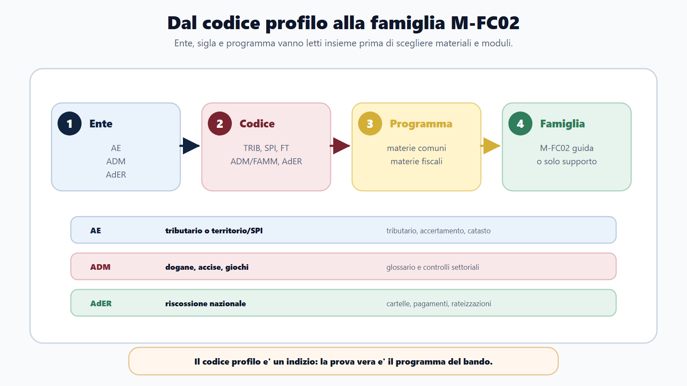
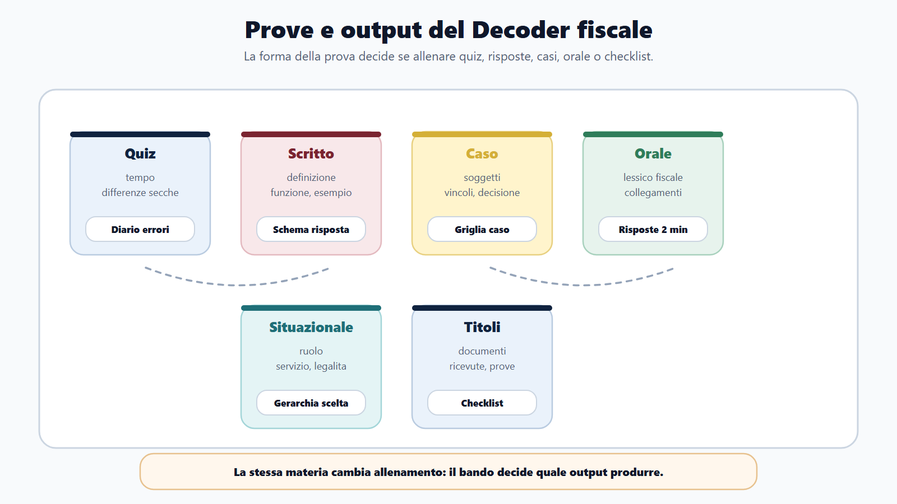
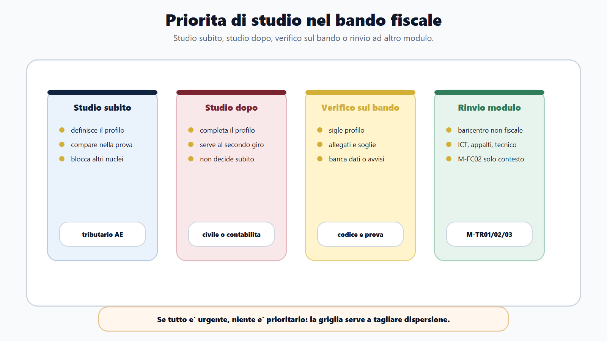
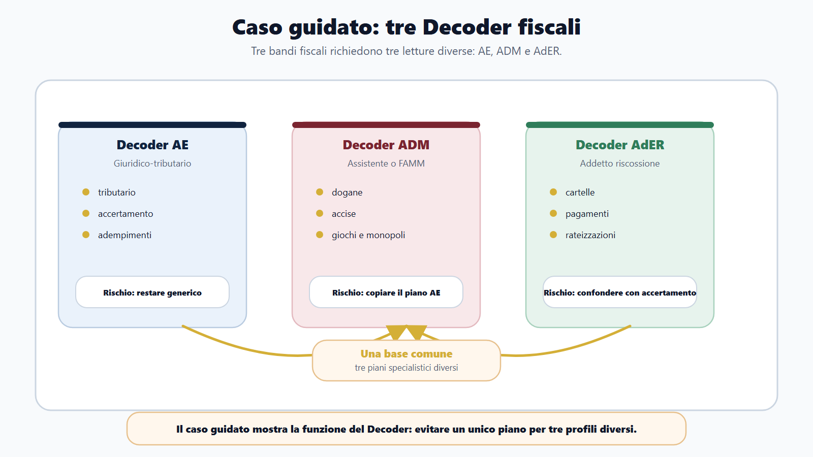

VOL-03 · Capitolo 17
M-FC02
Bando Decoder fiscale
Il capitolo precedente ha dato la mappa. Questo prende un bando concreto e lo trasforma in piano di lavoro. Ente, codice profilo, prove e programma, letti separati, restano informazioni sparse. Il Decoder li trasforma in decisioni: che cosa studiare subito, che cosa dopo, che cosa verificare prima di investire tempo o denaro.
01 · Il problema in prova
Copiare l’elenco delle materie non basta
Un candidato generico legge «diritto tributario» e apre un manuale. Un candidato che usa il Decoder capisce prima se il profilo è tributario, territorio/SPI, doganale, riscossione, assistente ADM, tecnico, digitale o fuori perimetro. Solo dopo sceglie materiali, esercizi e calendario.
Che cos’è
Il Decoder generale del Metodo BANDO vale per qualsiasi concorso. Il Decoder fiscale aggiunge un livello: non basta scrivere «Agenzia fiscale». Devi capire quale funzione viene selezionata.
A che serve in prova
A compilare una scheda per un bando AE, ADM o AdER e a produrre, entro 72 ore, un output: quiz, risposta orale, glossario, caso o checklist. Il risultato non è una bella scheda. È una prima settimana più lucida.
Questo bando mi chiede un profilo AE, ADM, AdER, o un profilo bandito da un’Agenzia ma centrato su altro?
Da questa risposta dipende il piano. Un profilo tributario AE, un profilo SPI, un assistente ADM e un addetto alla riscossione possono condividere materie comuni, ma non hanno lo stesso baricentro.
02 · BANDO
Cinque decisioni sul bando fiscale
Il Decoder non parte da quello che ti piace studiare. Parte da quello che il bando rende inevitabile.
| Domanda | Decisione | |
|---|---|---|
| B — Bando | Quale ente assume, con quale profilo, codice e prove? | Identità del concorso e famiglia M-FC02. |
| A — Aree | Quali aree comuni e quali fiscali compaiono? | Nucleo base, delta fiscale, rinvii. |
| N — Nuclei | Quali nuclei decidono il punteggio? | Studio subito, studio dopo, verifica. |
| D — Diario | Quali dubbi, scadenze e rischi monitoro? | Diario bando, errori e alert ufficiali. |
| O — Output | Che cosa produco per allenarmi? | Quiz, casi, orali, glossario, simulazioni. |
03 · Cinque regole
Come si compila, senza invenzioni
La scheda va compilata dal bando, dall’avviso, dagli allegati e dai canali ufficiali. Le sintesi online possono orientare, ma non sono la base della decisione. Se un dato non è chiaro, scrivi «da verificare» e indica dove controllerai.
Ente e codice insieme
Il fatto che il bando sia collegato ad AE, ADM o AdER non basta. Conta il profilo. TRIB, SPI, FT, ADM/FAMM o denominazioni equivalenti vanno trascritte con il significato esatto indicato dal bando, non a memoria o per passaparola.
Materie per funzione
Amministrativo, costituzionale, impiego, trasparenza, inglese e informatica sono nucleo comune. Le materie M-FC02 danno forma al profilo: tributario, accertamento, riscossione, dogane, accise, giochi, monopoli, catasto, estimo. Ogni riga deve produrre un output.
M-FC02 è principale quando il centro è fiscale. Diventa supporto quando il centro è un’altra funzione. Non dedurre il profilo solo dal nome dell’ente.
04 · Codice profilo
La sigla distingue percorsi che sembrano uguali
Il codice non è una decorazione amministrativa. Va letto con la descrizione del profilo e con il programma. La tabella obbliga a rispondere: che cosa seleziona davvero questo codice?
| Segnale | Famiglia probabile |
|---|---|
| TRIB, tributario, controlli o servizi fiscali | AE tributario |
| SPI, catasto, cartografia, estimo, OMI | AE territorio/SPI |
| ADM, FAMM, dogane, accise, giochi, monopoli | ADM fiscale |
| AdER, addetto riscossione, sportello | AdER riscossione |
| ICT, appalti, ingegneria, impianti | Fuori perimetro prevalente |
Ente, sigla e programma vanno letti insieme prima di scegliere i materiali.

05 · Prove
La forma della prova cambia lo studio
Nei concorsi fiscali la stessa materia si studia in modo diverso se la prova è a quiz, scritta, orale o situazionale. Se è a quiz, tributario va trasformato in domande, differenze e trappole. Se è orale, va saputo spiegare come funzionario che comprende il contesto dell’ente.

La prova indicata decide se allenare quiz, risposte, casi, orale o checklist.
06 · Output minimo
Ogni prova produce un allenamento
| Prova indicata | Conseguenza pratica | Output minimo |
|---|---|---|
| Quiz o risposta chiusa | Ripetizione, esclusione delle alternative, gestione del tempo. | Sessioni a tempo e diario errori. |
| Scritto teorico o risposta sintetica | Definizione, funzione, riferimento, esempio, chiusura. | Schemi di risposta per materie killer. |
| Teorico-pratica o caso | Soggetti, procedimento, documento, vincolo, decisione. | Griglia caso fiscale. |
| Orale | Ordine e collegamento tra materia comune e funzione fiscale. | Risposte da due minuti e domande da commissario. |
| Situazionale o competenze | Legalità, servizio, imparzialità, riservatezza, responsabilità. | Gerarchia di scelta e casi comportamentali. |
| Titoli o esperienze | Controllo di documenti e dichiarazioni. | Checklist titoli e ricevute. |
07 · Materie
Comuni, M-FC02, rinvii
Questa pagina impedisce la dispersione. Lo scopo è mettere ogni materia nel posto giusto, non ridurre lo studio.
| Tipo | Esempi | Come trattarla |
|---|---|---|
| Nucleo comune | Amministrativo, costituzionale, impiego, trasparenza, anticorruzione, privacy, inglese, informatica. | Base necessaria, da collegare al profilo fiscale. |
| M-FC02 centrale | Tributario, accertamento, adempimenti, riscossione, dogane, accise, giochi, monopoli, catasto, estimo. | Studio subito se definisce il profilo. |
| M-FC02 di supporto | Civile, commerciale, contabilità, economia, reati tributari, diritto UE, se indicati. | Dopo i nuclei centrali o in blocchi mirati. |
| Rinvio | ICT (M-TR01), appalti (M-TR02), tecnico (M-TR03), EPNE (M-FC03). | Quel modulo guida; M-FC02 solo per contesto. |
08 · Priorità
Studio subito, dopo, oppure verifico
Se tutto è «studio subito», il Decoder non sta funzionando. Studiare subito significa proteggere i nuclei che, senza una base iniziale, rendono fragile il resto. Non chiamare «priorità» tutto ciò che mette ansia.

Quattro decisioni: studio subito, studio dopo, verifico sul bando, rinvio ad altro modulo.
09 · Letture
AE tributario e AE territorio/SPI
Nel sottopercorso tributario il Decoder deve far emergere tre dati: profilo, diritto tributario e rapporto con il contribuente. Nei profili territorio il rischio è usare lo stesso piano del tributario puro.
AE tributario
Funzione: entrate, servizi fiscali, compliance, controlli, accertamento. Materie M-FC02: tributario, accertamento, adempimenti. Rischio: tanto amministrativo e tributario in coda. Output: quiz, schemi su accertamento, orali sulla funzione dell’Agenzia.
AE territorio/SPI
Il Decoder deve separare la parte giuridico-amministrativa da catasto, pubblicità immobiliare, estimo o OMI. Il primo output è una mappa «immobile, dato, valore, pubblicità, servizio, funzione fiscale», non una lista di norme.
Sto preparando un funzionario generico o un profilo che lavora dentro la funzione fiscale dell’Agenzia delle Entrate?
10 · Letture
ADM, assistenti ADM, AdER
«Tributario» non significa automaticamente programma AE. Per gli assistenti ADM il taglio è ancora più operativo. Per AdER la parola centrale è riscossione.
| Funzione e lessico | Rischio / output | |
|---|---|---|
| ADM | Dogane, accise, giochi, monopoli. Lessico: merce, dichiarazione, operatore, accisa, monopolio, autorizzazione. | Studiare solo tributario interno. Output: glossario ragionato, quiz, orali su controlli. |
| Assistente ADM | Nozioni amministrative e lessico settoriale se presente. Chiediti se il bando cerca supporto operativo o un altro profilo. | Se il centro è tecnico o ICT, M-FC02 diventa cornice. Output: diario termini simili e checklist domanda. |
| AdER | Cartelle, pagamenti, rateizzazioni, sospensioni, front-office. Linguaggio giuridico e di servizio. | Rispondere come se fosse accertamento AE. Output: mappe procedurali e casi di sportello. |
11 · Caso guidato
Luca compila tre Decoder, non tre manuali
Tre procedure rappresentative: giuridico-tributario AE, assistenti ADM, addetti alla riscossione. Luca non apre subito tre testi. Compila tre schede. Dopo due ore non ha ancora studiato pagine di teoria, ma ha evitato l’errore più costoso: tre bandi fiscali come se fossero lo stesso concorso.
AE
Famiglia tributario. Primo ciclo: tributario, accertamento, adempimenti e domande applicative.
ADM
Famiglia da verificare. Se compaiono dogane, accise, giochi, monopoli: glossario più quiz mirati.
AdER
Nucleo: gestione del credito e rapporto con il debitore. Mappa cartella-pagamento-rateizzazione-sospensione.
Tre bandi richiedono tre letture diverse.

12 · Verifica
Due domande da saper spiegare
Perché nei concorsi delle Agenzie fiscali non basta copiare l’elenco delle materie?
L’elenco non mostra da solo il baricentro. Si collegano ente, codice profilo, prove e programma. In AE il profilo può essere tributario o territorio/SPI; in ADM dogane, accise, giochi o monopoli; in AdER il centro è la riscossione. Il Decoder trasforma questa lettura in priorità e output.
Se nel bando compare diritto tributario, M-FC02 è sempre il modulo principale?
No. Il tributario può essere centrale, di supporto o accessorio. M-FC02 guida quando il profilo ha baricentro fiscale. Se il bando è ICT, appalti, tecnico o di altro ente, il tributario può essere un contenuto da studiare, ma non decide il modulo. Si sceglie sulla funzione, non su una parola del programma.
13 · Mini-esercizio
Dieci campi e una frase
Prendi un bando reale o simulato. Se non completi la frase, il bando non è ancora stato decodificato.
| Campo | Deve risultare |
|---|---|
| Ente, codice, denominazione esatta | Testo ufficiale, senza sigle inventate. |
| Famiglia e ruolo di M-FC02 | Principale o supporto. |
| Prova che decide il piano | Quiz, scritto, orale, caso o titoli. |
| Due comuni e tre specialistiche | Separate, con un eventuale rinvio. |
| Primo output entro 72 ore | Quiz, glossario, mappa o risposta orale. |
In questo bando devo studiare subito _____ perché _____; posso studiare dopo _____; devo verificare sul bando _____.
14 · Errori
Il Decoder si compila prima del piano
L’errore tipico è compilare la scheda dopo aver iniziato a studiare. Il candidato riconosce materie familiari e comincia dal materiale che possiede già. Dopo due settimane scopre che il codice profilo richiedeva un nucleo diverso, o che la prova decisiva non era quella immaginata.
Correzione
Il Decoder si scrive prima del piano settimanale. Non deve essere perfetto, ma deve essere scritto. Dove non sai, scrivi «da verificare». Dove hai una certezza, trasformala in azione.
Quando fermarsi
ICT, cybersecurity, sistemi informativi: modulo digitale. Gare e PNRR: modulo appalti. Ingegneria e impianti: modulo tecnico. Ente non fiscale con tributario accessorio: M-FC02 non guida.
Non inventare soglie, date o significati delle sigle. I dati puntuali di un bando vivo si verificano sul testo ufficiale e sugli allegati.
15 · Da tenere ferme
Cinque regole, con il perché
1. Il Bando Decoder fiscale trasforma il bando AE, ADM o AdER in piano di studio.
2. Ente, codice profilo, prove e programma vanno letti insieme.
3. Le materie comuni sono base, ma il delta fiscale decide il profilo.
4. TRIB, SPI, FT, ADM/FAMM, assistenti ADM e AdER richiedono classificazioni diverse, sempre da verificare sul bando.
5. Ogni campo compilato deve produrre un output: quiz, caso, orale, glossario, diario o checklist.
16 · Checklist
Prima di passare all’organizzazione
Se una di queste risposte manca, non iniziare ancora un piano dettagliato. Prima chiudi il Decoder.
Fonte
Ho letto bando o avviso ufficiale, non solo una sintesi.
Famiglia
Ho classificato AE tributario, territorio/SPI, ADM, AdER, misto o fuori.
Priorità
Ho compilato studio subito, studio dopo e verifico sul bando.
Azione
Ho scritto rischio, output entro 72 ore e canali ufficiali da monitorare.
Prossimo capitolo
Ordinamento e organizzazione di AE, ADM e AdER
Il bando è decodificato. Ora si entra nell’ente: MEF e agenzie, tre funzioni, centro e territorio, accertamento distinto dalla riscossione.